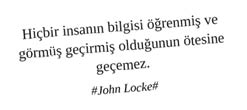

Kişisel gelişim eğitimleri; serbest piyasa ekonomisinin hayatımıza daha entegre nüfuz etmesi ile birlikte “toplum odaklılıktan” “birey odaklılığa” evrilen ekonomik yapı doğrultusunda bireylerin ekonomik çarkların arasında kaybolup gitmeden çarklara daha etkin katma değer üretmesi için motivasyon sağlayan eğitimlerdir. Diğer bir tabirle sisteme tutunabilmek, yani sisteme aidiyet hissetmek için icat edilmiş bir endüstri sürecidir.
Hemen hemen her konu hakkında eğitim verme yetkinliğine sahip olan eğitmenler ile hemen hemen her konuda eğitim ve sertifika alma eğiliminde olan eğitim katılımcılarının kesişim kümesi eğitim profesyonelleri evrenini oluşturur.
Neden Eğitim?
Daha iyi bir kariyer, daha iyi bir gelir düzeyi, daha iyi bir yaşam için.
Daha havalı bir duruş için.
“Sertifikan kadar konuş!” diyebilmek için.
“Konunun uzmanı olarak görüşlerimi açıklıyorum” yani “Açılın ben doktorum!” karizmasını deneyimleyebilmek için.
Kendini ve başkalarını kandırarak mutluluğun gizli sırrına erişmek için.
İnsan kaynakları departmanına ve daha da önemlisi şirkete layık olabilmek için.
Altın bilezik sahibi olmak için.
Mutsuzluğun, tatminsizliğin, metropolden bunalmışlığın, kalabalık içindeki yalnızlığın, rutin denen ömür törpüsünden bir an da olsa kaçabilmenin, yeni fırsatlarla kesişebilmenin, aynılığın getirdiği kabızlığın bir sonucudur, kazık kadar adamların ve kadınların eğitimlerden eğitimlere koşmasının şuuraltı.
Katılımcı Gözünden...
“Eğitim off-site olacak değil mi? (Kızgın kumlardan serin sulara, otellerin sahipsiz rahatlığına kısa bir yolculuk çekiyor canım).”
“En kötü otelde takılırız: Spa, mini bar, birbirinden lezzetli yemekler, gece sabahlara kadar dedikodu ekseninde dalgalanmalar yaşarız.”
“Akşam yemeğine katılmak zorunlu mu? Alternatif bir program yapamaz mıyız? (Aynı kesişim kümesine ait olmak istediğim dişi kişilikler var. Olur da bir okazyon yakalar mıyız?)”
“Serbest kıyafet ile gelebilir miyiz? (Smart casual olayını nereye kadar esnetebiliriz? Almancı kılığında gelebilir miyiz?)”
“Sunumu ve videoları paylaşacaksınız değil mi? İsterseniz flash disk verebilirim. (Şu an dinlemiyor ve kolpa yapıyorum. Sunumu ve videoları alırsam Neo gibi kafadan yükleme yapabilirim ben.)”
“Sunum, elimizdeki kitapçıkta mevcut değil mi? Ona göre not alalım (Elimiz haybeye yorulmasın).”
“Anlattıklarınızı çok iyi anlıyorum ama daha somut bir örnek verebilir misiniz? (Kafamda nokta bile şekillenmiyor, biraz ipucu verseniz).”
“Fn + F7 yaparsanız görüntü gelecektir. (Bunu diyerek topa giriyor ve olası tüm teknik madaralıklara figüran olmayı kabul ediyorum).”
“Sunumda çok güzel fotoğraflar kullanıyorsunuz, bunları nereden buluyorsunuz? (Mal gibi dinlemiyorum, hem konuyu takip ediyor hem de ince detayları yakalıyorum. Görün beni).”
“Benim mutlaka katılmam gereken acil bir toplantım var. Çok da keyif alıyorum ancak bir saat erken çıkabilir miyim? (BlackBerry’nin / iPhone’un şarjı bitiyor, arabadan şarj almam ve acilen sigara içmem lazım).”
“Akşama aktivite olacak mı? (Yoksa kendi istikametimize doğru sarkabilir miyiz?)”
“Neden en zayıf ve en kıl olduğum adamlarla aynı gruba düşüyorum? (Grup oyunu olursa kesin sonuncuyuz).”
“Grupta yer alan diğer çalışkan arkadaşlar yapsınlar biz sunarız. (Doğal liderlik teorisine göre yaşıyorum).”
“Sigara için küçük bir mola verelim mi? (Bi soru sormam lazım ama insan içinde sormaya çekiniyorum.)”
“Anlattıklarınızı işimize nasıl uygularız? (Videolar, fotolar, aforizmalar güzel de biz bundan nasıl ekmek yeriz sen onu söyle.)”
“Bizim süreçlerimizde şöyle şöyle bir sorunumuz var. Bu sorunu çözmek için önerileriniz nedir? (Beleş danışmanlık için kılıf uydurdum, uysa da uymasa da artık.)”
“Yaratıcı drama çalışması esnasında neden hep ben müşteri oluyorum? (Âlemin maskarası, Cem Yılmaz’ın Selahattin’i niye ben olmak zorundayım?)”
“Film gösterimi ve örnek olay çalışmalarında gösterilen filmlerin hepsini görmüştük. (Aralarda bi yerde sana kıl kaptım, inceden ayarı veriyorum idare et.)”
“Eğitim sonunda sertifika verilecek mi? (Somut çıktılara odaklı bir profesyonelim.)”
“Eğitim sonunda sınav var mı? (Sonuçları alenen ilan edilecek mi? Kazık kadar iş güç sahibi bir adam olarak egomu şu insanlarla da tatmin edebilecek miyim?)”
“Kartınız var mı? Sizinle iletişime geçebileceğimiz bir email adresi var mıdır? (Kartvizit insanıyım, gün gelir lazım olur adamıyım ben.)”
“Şöyle bir projem var. Ne dersiniz? (Bir fırsat veren çıksa ne denizlere yelken açarım. İkimiz bir fidanın güller açan dalı olabilir miyiz?)”
Eğitmen Gözünden...
“Öncelikle bir eğitim ihtiyaç analizi yapabilirsek daha verimli ilerleriz. (Sonra olur olmaz sorularla konuyu dağıtıp beni germeyin.)”
“Herkes eğitimden önce gönderdiğim pre-work çalışmasını yaptı mı? (Eğitime gelmeden önce mutlaka pre-work’ünüzü yapıp gelin ki arkadaşlarınıza madara olmayın ya da yapmayın asi ve özgün kimliğiniz çekicilik ekseninde zirve yapsın.)”
“Seminerin ardından, seminer sırasında anlatılanların etkisiyle yeni bir hayata başlayacağınızı vaat ediyorum. (Bir şeyler vaat etmem lazım, idare edin.)”
“Ne kadar çok görsel kullanır ve az yazı yazarsan o kadar başarılı bir sunum hazırlarsın (Slideshare’de yeterince zaman geçirdim, bütün Steve Jobs keynote’larını izledim.)”
“Gazla videoyu, aktiviteyi gitsin. 4 video 3 aktivite ile eğitim süresini dolduruyorsun zaten. (Alan memnun satan memnun, söyletmeyin adamı.)”
“Hepiniz hoş geldiniz... Öncelikle birbirimizi tanıyarak başlayalım mı? Sağdan sizden başlayabilir miyiz? (Adınız, soyadınız, pozisyonunuz, eğitiminiz, beklentileriniz, ayakkabı numaranız, solak mısınız, kaç kere top sektirebilirsiniz, şu an gazınız var mı? Bekâr mısınız?..)”
“Başlarken eğitimden beklentilerinizi paylaşabilirseniz, beklentilerinizi flip chart’a not ederiz ve ilgili beklentiyi eğitim sonunda cover edip etmediğimize bakabiliriz. (Böylece ‘Olm adama bak tüm beklentilerimizi karşıladı, hayvan gibi değerlendirme notu verelim’ diyebilirsiniz. Çakoz?)”
“Şimdi herkes yanındaki arkadaşının elini tutup, gözlerini kapatıp kendini müziğe verebilir mi? (Ben de bu arada biraz kafa dinleyeyim.)”
“Eğitim esnasında sizler de lütfen takıldığınız ya da fikir belirtmek istediğiniz yerlerde müdahalede bulunmaktan çekinmeyin, daha interaktif bir eğitim olur. (Her türlü bozarım, o topa hiç girmeyin. Saha benim top benim aslanım.)”
“Kısaca kendimden bahsedeyim... (Önce bi boylarımızı ölçüşelim. Sen hücrenden kaçıp gelen beyaz yakalı, ben tabutu delip çıkmış Andy Dufresne. Önce bunu bi bilelim, idrak edelim.)”
“Eğitim içeriğinde yer alan her örneği bir şekilde sektörünüze bağlayabilirsiniz. (Müşteri velinimetimizdir.)”
“(Katılımcılardan gelen kazık bir soru söz konusu olduğunda) Katılımcılara dönülüp: ‘Çok güzel bir soru. Bu soruyu cevaplayabilecek biri var mı?’ (Krizi fırsata çevirdim, eğitimi adaptive sundum, bunu da bi yerde belirteyim ki bundan da ekmek yiyeyim.)”
“Mini 2 Av kablosu olan var mı? (Birden çok anlam içerir, bi nevi kombodur: 1. Mac kullanıyorum tabii ki 2. Dağınık bir adamım, kreatif sunumlar ve eğitim içerikleri hazırlamaktan böyle angarya detayları atlayabiliyorum, bunlara değil olayın kendisine odaklanın.)”
“Projeksiyonun ampulünde bir bozukluk mu var? Vurdursak çalışır mı? (Biri teknik ekibi çağırabilir mi? Bir kahraman arıyorum.)”
“Sunumu uzaktan kontrol edecek zımbırtıdan var mı? Getirmeyi unutmuşum da... (Bkz. Mini 2 Av kablosu mevzusu.)”
“Eğitim öncesinde katılımcı profili hakkında bilgi alabilir miyim? (Kime konuşuyoruz bilelim, doluya sıkmayalım madara olmayalım.)”
“Şimdi bir role play çalışması yapacağız. Sizler anlatacaksınız, videoya kaydedeceğiz sonrasında kayıtlarınızı değerlendireceğiz. Hazır mısınız? (Gülelim eğlenelim, güzel vakit geçirelim.)”
“Yemek sonrası dikkatinizi toplamak için güzel bir video ile başlayalım. (Uyuyan katılımcıyı sevmem. Size asla bulamayacağınız bir kampanya videosuyla geldim.)”
“Değerlendirme formlarını doldurmayı unutmayalım? (Hakkımızda ne düşünülüyor bilelim.)”
Limit kavramı nasıl ki asla ulaşılamayacak olan o esrarlı ufuk çizgisini ifade eder, profesyonel eğitim olayı da kişinin yaşadığı ve sahip olduklarıyla, özendikleri ve ukdeleri arasında yaşanan bir ışık oyunundan ibarettir. Beklenti üzerine kurulu bu endüstrinin en büyük güvencesi tatminsizlik ve gündelik ofis yaşamından kaçıştır, profesyonelin aç duruşudur.
Hemen hemen her konu hakkında eğitim alma ve verme ihtiyacını bünyelerinde yeme / içme dürtüsü ötesinde şiddetle hissedenler için John Locke’tan geliyor:
